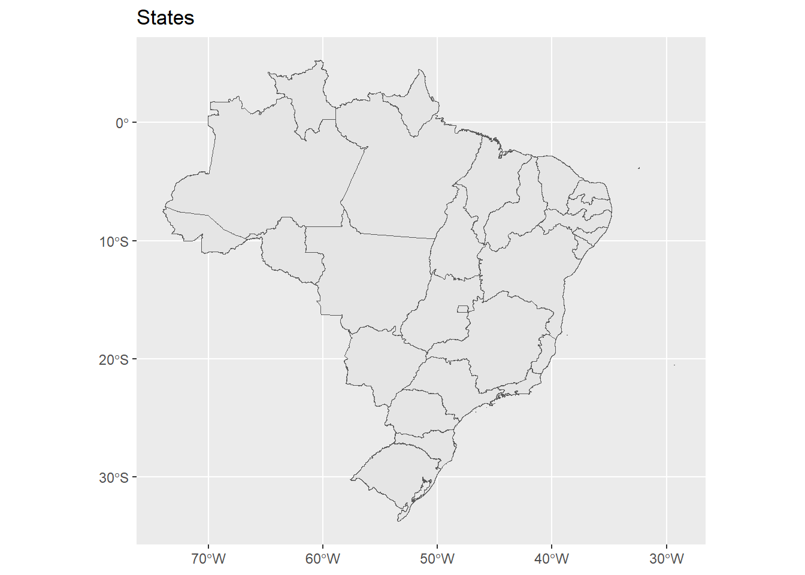
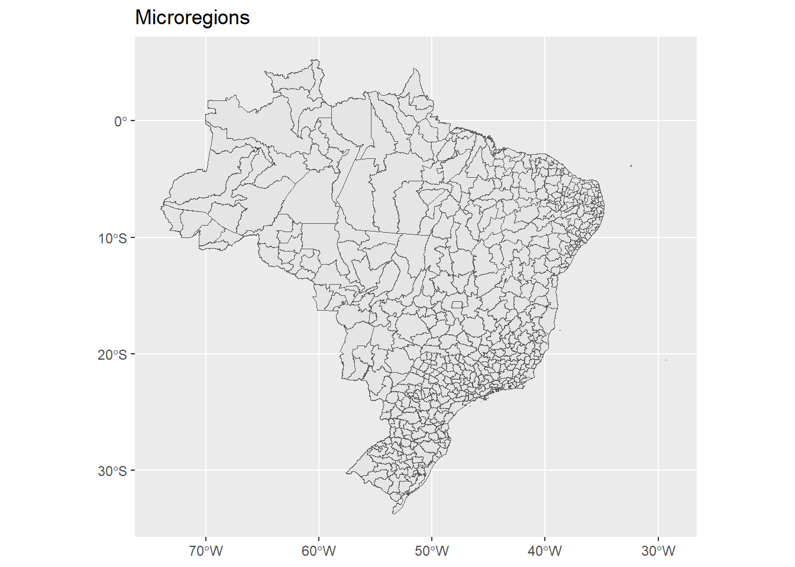

library(geobr)
library(ggplot2)
map <- read_state(year = 2020, showProgress = FALSE)
# length(unique(map$code_state)) # number of states: 27
ggplot(map) + geom_sf() + labs(title = "States")
map <- read_micro_region(year = 2020, showProgress = FALSE)
# length(unique(map$code_micro)) # number of microregions: 558
ggplot(map) + geom_sf() + labs(title = "Microregions")